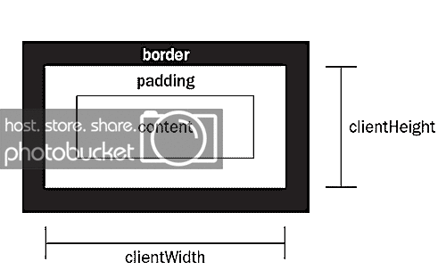
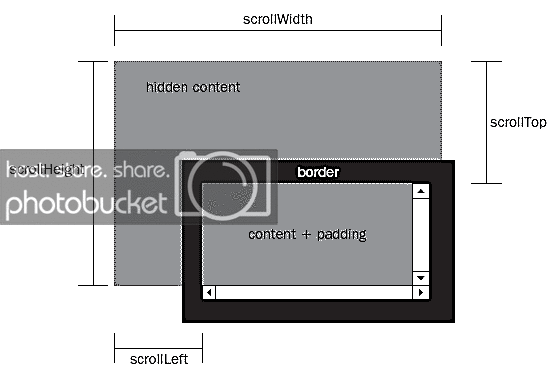
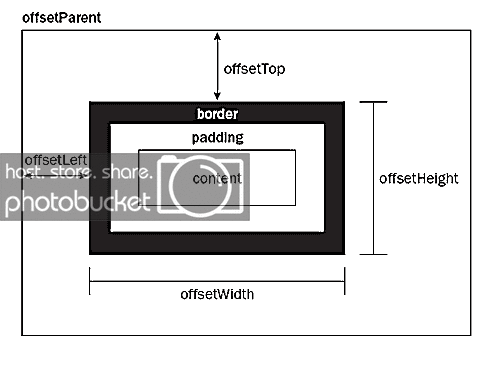
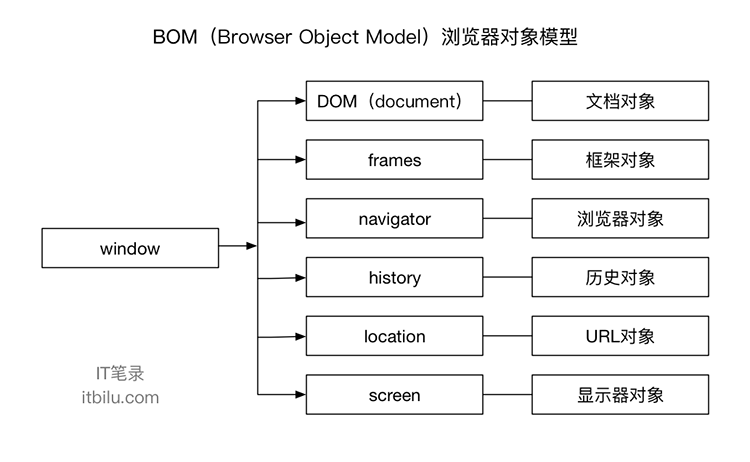

# DOM与BOM
# 前言
本人平时学习及收集内容，欢迎参入一起讨论。
# 内容
# 一、DOM
DOM（文档对象模型）是HTML和XML的应用程序接口（API）。
DOM树由节点构成，节点有以下种类：元素节点、文本节点和属性节点。
- 获取 DOM 节点
- 层次节点指针
- 节点操作
- 属性操作
- 文本操作
- 获取元素大小
# 1.1 获取 DOM 节点
| 方法 | 说明 | 备注 |
|---|---|---|
| getElementById | 获取特定 ID 元素的节点 | 获取单个节点对象 |
| getElementsByClassName | 获取指定 class 类的节点列表 | 返回值为节点数组 |
| getElementsByTagName | 获取相同元素的节点列表 | 返回值为节点数组 |
| getElementsByName | 获取相同名称的节点列表 | 返回值为节点数组 |
| querySelector | 获取 class 第一或 id 的节点 | 返回值为一个节点对象 |
| querySelectorAll | row 2 col 2 | 返回值为节点数组 |
# 1.2 层次节点指针
| 方法 | 说明 |
|---|---|
| childNodes | 获取当前元素节点的所有节点 |
| firstChild | 获取当前元素节点的第一个子节点 |
| lastChild | 获取当前元素节点的最后一个子节点 |
| ownerDocument | 获取该节点的文档根节点，相当与 document |
| parentNode | 获取当前节点的父节点 |
| previousSibling | 获取当前节点的前一个同级节点 |
| nextSibling | 获取当前节点的后一个同级节点 |
| attributes | 获取当前元素节点的所有属性节点集合 |
# 1.3 节点操作
| 方法 | 说明 |
|---|---|
| createElement | 创建一个元素节点 |
| createAttribute | 创建一个属性节点 |
| createTextNode | 创建一个文本节点 |
| appendChild | 向节点的子节点列表的末尾添加新的子节点 |
| insertBefore | 在已知的子节点前插入一个新的子节点 |
| replaceChild | 将某个子节点替换为另一个 |
| cloneNode | 创建指定节点的副本，有一个参数，其值为 true 或 false，true 复制当前节点及其所有子节点，false 仅复制当前节点 |
| removeChild | 删除指定的节点 |
# 1.4 属性操作
| 方法 | 说明 |
|---|---|
| id | 元素节点的 id 名称 |
| title | 元素节点的 title 属性值 |
| style | css 内联样式属性值 |
| className | CSS 元素的类 |
| getAttribute | 获取特定元素节点属性的值 |
| setAttribute | 设置特定元素节点属性的值 |
| removeAttribute | 移除特定元素节点属性 |
# 1.5 文本操作
| 方法 | 说明 |
|---|---|
| insertData(offset,String) | 从 offset 指定的位置插入 string |
| appendData(string) | 将 string 插入到文本节点的末尾处 |
| deleteDate(offset,count) | 从 offset 起删除 count 个字符 |
| replaceData(off,count,string) | 从 off 将 count 个字符用 string 替代 |
| splitData(offset) | 从 offset 起将文本节点分成两个节点 |
| substring(offset,count) | 返回由 offset 起的 count 个节点 |
# 1.6 获取元素大小
# 1.6.1 clientWidth 和 clientHeight
这组属性可以获取元素可视区的大小，可以得到元素内容及内边距所占据的空间大小。
dom.clientWidth; //400
dom.clientHeight //400
2
3
返回了元素大小，但没有单位，默认单位是px
- 增加边框，无变化
- 增加外边距，无变化
- 增加滚动条，最张值等于原本大小减去滚动条的大小
- 增加内边距，最终值等于原本大小加上内边距的大小

# 1.6.2 scrollWidth 和 scrollHeight
这组属性可以获取滚动内容的元素大小
dom.scrollWidth
dom.scrollHeight
2
3
- 增加内边距，最终值会等于原本大小加上内边距大小
- 增加滚动条，最张值会等于原本大小送去滚动条大小
# 1.6.3 scrollTop 和 scrollLeft
这组属性可以获取滚动条被隐藏的区域大小，也可设置定位到该区域。
dom.scrollTop; //获取滚动内容上方的位置
dom.scrollLeft; //获取滚动内容左方的位置
2
3

# 1.6.4 offsetWidth 和 offsetHeight
dom.offsetWidth; //400
dom.offsetHeight; //400
2
3
返回了元素大小，默认单位是px。如果没有设置任何CSS的宽度和高度，他会得到计算后的宽度和高度。
- offsetHeight元素在垂直方向上占用的空间大小，以像素计。包括元素的高度、（可见的）水平滚动条的高度、上边框高度和下边框高度。
- offsetWidth元素在水平方向上占用的空间大小，以像素计。包括元素的宽度、（可见的）垂直滚动笨拙宽度、左边框宽度和右边框宽度。
# 1.6.5 offsetLeft 和 offsetTop
这组属性可以获取当前元素相对于父元素的位置。
dom.offsetLeft; //20
dom.offsetTop; //20
2
3

# 1.6.6 获取元素位置的快速方法
除了上面的函数以外，还有一种快速方法，可以立刻获得网页元素的位置。
那就是使用getBoundingClientRect()方法。它返回一个对象，其中包含了left、right、top、bottom四个属性，分别对应了该元素的左上角和右下角相对于浏览器窗口（viewport）左上角的距离。
所以，网页元素的相对位置就是
var X= this.getBoundingClientRect().left;
var Y =this.getBoundingClientRect().top;
2
3
# 二、BOM
BOM浏览器对象模型（Browser Object Model）BOM对象是在Web中使用JavaScript的核心，该对象提供了与浏览器交互相关对象结构。BOM由多个子对象组成，其核心为window对象，它是BOM的顶层对象，表示在浏览器环境中的一个全局的顶级对象，所有在浏览器环境中使用的对象都是window对象的子对象。
BOM中的对象主要包括：DOM相关对象、frames对象、navigator对象、history对象、location对象、screen对象

# 三、思维导图

# 参考资料
- 《高程第三版》
- 《权威第 6 版》
- 温故js系列（6）-DOM
# 联系作者
平凡世界，贵在坚持。

← apply&bind&call JS事件 →